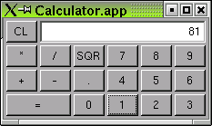
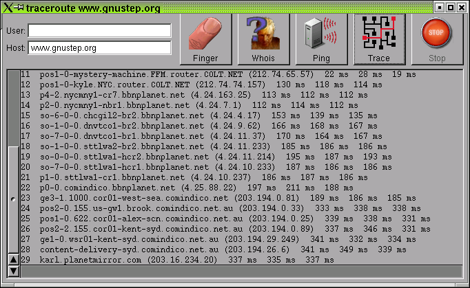
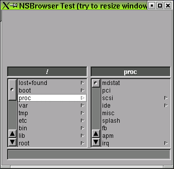
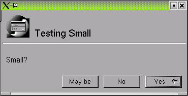
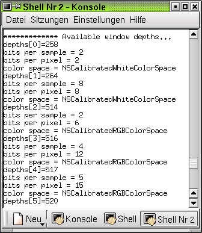
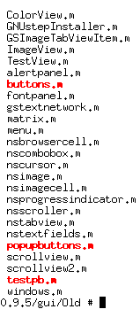
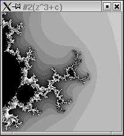

GNUstep Examples
GNUstep Examples help you get started with GNUstep coding. Find and re-use many useful code snippets. Download the latest examples tar.gz from the FTP site.
List of examples
-
Calculator: a calculator for basic arithmetic.

-
CurrencyConverter: converts from Euros to other currencies.

-
Finger: provides an interface to the finger, ping, whois and traceroute utilities.

-
Classes:a test suite that contains four programs: NSBrowserTest (tests NSBrowser), NSPanelTest (tests different types of panels), NSProgressIndicator (uses threads to display a progress indicator) and NSScreenTest (determines the type of screen that is being used).




-
GSTest: contains a variety of tests e.g. an NSForm test.

-
HostAddress: resolves addresses.

-
Ink: demonstrates the use of NSTextView.

-
Old: this test suite contains a variety of older tests.

-
GFractal: a fractal viewer that computes several fractals including the Mandelbrot set.

-
GPuzzle: simulates a jigsaw puzzle and illustrates the use of clipping paths. Challenge: implement "cacheImageInRect" (NSWindow) and update GPuzzle to use this method.